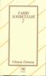
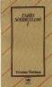

Tarih sohbetlernin ikinci kitabu birincisi gibi güzel bilgiler içeriyor. Bir iki not: - Ã?inli müslümanların isimlerinin başına "Ma" sıfatı getirilir. - Türklere ilk Türk isminin ilk olarak avrupalılar tarafından Selçukluların anadoluya geldiğinde verildiğini vd.
devamını okuCSS'i Web Sayfalarına Eklemek
1- Kod içinde (In-line)
Direk olarak (X)HTML elementin içine style özelliği kullanılarak uygulamak.
<div style="color:red">Deneme yazımız</div>
Tüm CSS komutlarını kodların içine direk uygulamak önerilen bir kodlama şekli değildir. Ancak özel durumlarda kullanılabilir.
2- style Elementi kullanılarak
<head> kısmında <style> elementi içinde CSS kodumuzu yazarak uygulamak ...
devamını okuCSS İpuçları 6 : CSS kısaltmaları hakkında
Genel özellikleri bir kere tanımlayarak tekrarlardan kurtulabiliriz. Bu sitemizi hız ve tutarlılık kazandıracaktır. Örneğin sitemizde kullanılan genel yazı tipi ve yazı tipi rengini body içinde tanımlayarak bir çok tekrarı engellemiş oluruz.
devamını okubody { font:Arial, Helvetica, sans-serif; color: #474747 }
WordPress HTML kod ekleme sorununu nasıl çözdüm
WordPress'de HTML kod ekleyince bu kodu yorumlayıp sayfaya o şekilde basıyordu bu nedenle sorunlarım oldu. - wysiwtg editor deaktif etmek gerekiyor. admin -> kullanıcılar -> aşağıdaki "Use the visual rich editor when writing" işaretini kaldırın Sonrada admin -> Ayarlar -> Yaz bölümünde "WordPress should correct invalidly nested XHTML automatically" başındaki işareti kaldırın. Ben WordPres ...
devamını okuSözde-sınıflar(Pseudo-class) ve Sözde-elementler(Pseudo-elements)
Pseudo sınıf ve elementleri CSS'i destekleyen web tarayıcıları tarafından otomatik olarak tanınan özel sınıf ve elementlerdir. Bu sınıf ve elementler (x)html hiyerarşisi ile erişemediğimiz element ve sınıflara erişmemizi sağlar. Pseudo sınıfı bir elementi farklı sınıflara böler(örn: link elementini active, visited vd. sınıflarına böler) Pseudo elementi ise bir ...
devamını okuCSS İpuçları 5 : CSS seçicilerini tanımlarken küçük-büyük harfe dikkat etmek
Eğer XHTML ile CSS kullanıyorsak seçici(selector) olarak kullandığımız XHTML elementlerinin küçük büyük harfe duyarlı olduğunu unutmamalıyız. Küçük büyük harf farklılıklarından kaynaklanan sorunları aşmak için XHTML elementi olarak kullandığımız seçicileri küçük harfle yazarak bu sorunu bertaraf etmiş oluruz. HTML ve XHTML'in her ikisinde de özellikler(attributes) küçük büyük harfe ...
devamını okuJson Net 1.1 veriyonu çıktı
Ajax ve Asp.Net arasında bağlantı kuran James Newton-King's kütüphanesinin yeni versiyonu çıktı. Yeni versiyonda en büyük ekleme XML ve Json arasındaki veri aktarım yönteminin optimize edilmesi Ayrıntılı bilgi için tıklayınız
devamını okuYeni Nesil Web Tarayıcılarını Karşılaştıralım
Web Tarayıcılar yeni versiyonlarını bu ay içinde çıkardı. Firefox2.0 Beta, İE 7 Beta3 ve Opera 9.0 Bu web tarayıcılarını tüm yönleriyle karşılaştıran bir makale okumak için tıklayınız
devamını okuCSS İpuçları 4 : CSS ile birlikte yürürlükten kalkan HTML özellikleri
CSS kullanımı ile tedavülden kalkan veya kullanımı azalan özellikleri sıralayalım:
- name form elemanlarında kullanılan name yerine artık id
- body içinde kullanılan text ve bgcolor yerine CSS'de color ve background-color
- body içinde kullanılan background yerine background-images
- body içinde kullanılan link, alink, vlink yerine CSS tabanlı :link, :visited ve :active
- align ...
Tarih Sohbetleri I
3 cilt olan Yılmaz Ã?ztuna'nın Tarih Sohbetlerinin Bu ilk cildi gayet güzel tarih ve genel kültürü bilgisi veriyor. Çok güzel bir bilgi kayanağı Yayıncıdan: Biz bir cihan imparatorluğunun varisleriyiz. Geleceğimize dair görüşler ileri sürer, programlar yaparken geçmişteki bu muazzam siyasî ve medenî tecrübelerimizden sonuna kadar istifade etmek bizim ...
devamını oku